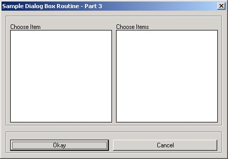
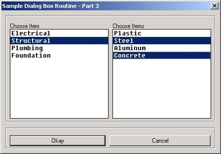
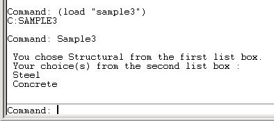

<html>


<!-- Mirrored from www.jefferypsanders.com/autolisp_DCL_Part3.html by HTTrack Website Copier/3.x [XR&CO'2004], Thu, 23 Sep 2004 01:09:27 GMT -->
<head>
<meta name="description" content="AutoLisp Dialog Control Language">
<meta name="GENERATOR" content="Microsoft FrontPage 5.0">
<meta name="keywords" content="autolisp, DCL, dialog, control, language">
<title>The AutoLisp Ultimate Tutorial&nbsp; - DCL</title>
</head>

<body>

</body>

</html>
<p align="center"><font color="#000000"><big><big><big><strong>The
    AutoLisp Tutorial - DCL</strong></big></big></big></font><font face="Helvetica"></p>
    </font><p align="center"><font color="#000000"><big><big><strong>Dialog Control Language -
    Part 3</strong></big></big></font></p>
    <hr size="4" color="#0000FF">
    <p>&nbsp; <big><strong>Part 3 - List_Box</strong></big>&nbsp;&nbsp; </p>
    <hr size="4" color="#0000FF">
    <p>&nbsp;&nbsp; Let's build a working DCL file showing us exactly how to handle list
    boxes. </p>
    <p>&nbsp;We will build a DCL file containing two list boxes plus an Okay and Cancel
    button.&nbsp; We will set the first list box to single selection and the second to
    multiple selection.&nbsp; The selected items will be displayed on the screen after the
    user presses the Okay button.</p>
    <hr size="4" color="#0000FF">
    <p>&nbsp; <strong>Layout thoughts:&nbsp;</strong>&nbsp; I will place the list boxes in a
    row, (side by side).&nbsp; Then I'll put the Okay and Cancel buttons in a row at the
    bottom of the dialog box.&nbsp; So...I'll need something like this:</p>
    <p><font face="Courier New">: column { <br>
    &nbsp; : boxed_row { <br>
    &nbsp;&nbsp;&nbsp; : list_box { <br>
    &nbsp;&nbsp;&nbsp;&nbsp;&nbsp; <font color="#FF0000">// Put code for list_box 1 here</font><br>
    &nbsp;&nbsp;&nbsp; }&nbsp; <br>
    &nbsp;&nbsp;&nbsp; : list_box {&nbsp; <br>
    &nbsp;&nbsp;&nbsp;&nbsp;&nbsp;&nbsp;<font color="#FF0000">// Put code for list_box 2 here</font>&nbsp;
    <br>
    &nbsp;&nbsp;&nbsp; }&nbsp; <br>
    &nbsp; }&nbsp; <br>
    &nbsp; : boxed_row { <br>
    &nbsp;&nbsp;&nbsp; : button { </font><br>
    <font face="Courier New">&nbsp;&nbsp;&nbsp;&nbsp;&nbsp;&nbsp; <font color="#FF0000">// Put
    code for the Okay button here</font><br>
    &nbsp;&nbsp;&nbsp; }&nbsp; <br>
    &nbsp;&nbsp;&nbsp; : button { </font><br>
    <font face="Courier New">&nbsp;&nbsp;&nbsp;&nbsp;&nbsp;&nbsp; <font color="#FF0000">// Put
    code for the Cancel button here</font><br>
    &nbsp;&nbsp;&nbsp; } <br>
    &nbsp; }&nbsp;&nbsp; <br>
    } </font></p>
    <hr size="4" color="#0000FF">
    <p>Let's copy in the code for the header and all of the controls above from the &quot;<a href="autolisp_DCL_Controls.html">Controls</a>&quot; section of this tutorial.&nbsp; I'll
    show them in red.&nbsp; Notice the key names and labels had to be changed.</p>
    <p><font color="#FF0000"><font face="Courier New">SAMPLE3 : dialog { <br>
    &nbsp;&nbsp;&nbsp;&nbsp;&nbsp; &nbsp;&nbsp;&nbsp; label = &quot;Sample Dialog Box Routine
    - Part 3&quot;;</font> </font><br>
    <font face="Courier New">&nbsp;&nbsp;&nbsp;&nbsp;&nbsp;&nbsp; &nbsp;&nbsp; : column { <br>
    &nbsp;&nbsp;&nbsp;&nbsp;&nbsp;&nbsp; &nbsp;&nbsp; &nbsp; : boxed_row { <br>
    &nbsp;&nbsp;&nbsp;&nbsp;&nbsp;&nbsp;&nbsp;&nbsp;&nbsp;&nbsp;&nbsp;&nbsp;&nbsp; : list_box
    {<br>
    &nbsp;&nbsp;&nbsp;&nbsp;&nbsp;&nbsp;&nbsp;&nbsp;&nbsp;&nbsp;&nbsp;&nbsp;&nbsp;&nbsp;&nbsp;
    label =&quot;<font color="#FF0000">Choose Item</font>&quot;;<br>
    &nbsp;&nbsp;&nbsp;&nbsp;&nbsp;&nbsp;&nbsp;&nbsp;&nbsp;&nbsp;&nbsp;&nbsp;&nbsp; &nbsp; key
    = &quot;<font color="#FF0000">mylist1</font>&quot;;<br>
    &nbsp;&nbsp;&nbsp;&nbsp;&nbsp;&nbsp;&nbsp;&nbsp;&nbsp;&nbsp;&nbsp;&nbsp;&nbsp; &nbsp;
    height = 15;<br>
    &nbsp;&nbsp;&nbsp;&nbsp;&nbsp;&nbsp;&nbsp;&nbsp;&nbsp;&nbsp;&nbsp;&nbsp;&nbsp; &nbsp;
    width = 25;<br>
    &nbsp;&nbsp;&nbsp;&nbsp;&nbsp;&nbsp;&nbsp;&nbsp;&nbsp;&nbsp;&nbsp;&nbsp;&nbsp; &nbsp;
    multiple_select = <font color="#FF0000">false</font>;<br>
    &nbsp;&nbsp;&nbsp;&nbsp;&nbsp;&nbsp;&nbsp;&nbsp;&nbsp;&nbsp;&nbsp;&nbsp;&nbsp; &nbsp;
    fixed_width_font = true;<br>
    &nbsp;&nbsp;&nbsp;&nbsp;&nbsp;&nbsp;&nbsp;&nbsp;&nbsp;&nbsp;&nbsp;&nbsp;&nbsp; &nbsp;
    value = <font color="#FF0000">&quot;&quot;</font>;<br>
    &nbsp;&nbsp;&nbsp;&nbsp;&nbsp;&nbsp;&nbsp;&nbsp;&nbsp;&nbsp;&nbsp;&nbsp;&nbsp; }<br>
    &nbsp;&nbsp;&nbsp;&nbsp;&nbsp;&nbsp;&nbsp;&nbsp;&nbsp;&nbsp;&nbsp;&nbsp;&nbsp; : list_box
    {<br>
    &nbsp;&nbsp;&nbsp;&nbsp;&nbsp;&nbsp;&nbsp;&nbsp;&nbsp;&nbsp;&nbsp;&nbsp;&nbsp;&nbsp;&nbsp;
    label =&quot;Choose Items&quot;;<br>
    &nbsp;&nbsp;&nbsp;&nbsp;&nbsp;&nbsp;&nbsp;&nbsp;&nbsp;&nbsp;&nbsp;&nbsp;&nbsp; &nbsp; key
    = &quot;<font color="#FF0000">mylist2</font>&quot;;<br>
    &nbsp;&nbsp;&nbsp;&nbsp;&nbsp;&nbsp;&nbsp;&nbsp;&nbsp;&nbsp;&nbsp;&nbsp;&nbsp; &nbsp;
    height = 15;<br>
    &nbsp;&nbsp;&nbsp;&nbsp;&nbsp;&nbsp;&nbsp;&nbsp;&nbsp;&nbsp;&nbsp;&nbsp;&nbsp; &nbsp;
    width = 25;<br>
    &nbsp;&nbsp;&nbsp;&nbsp;&nbsp;&nbsp;&nbsp;&nbsp;&nbsp;&nbsp;&nbsp;&nbsp;&nbsp; &nbsp;
    multiple_select = true;<br>
    &nbsp;&nbsp;&nbsp;&nbsp;&nbsp;&nbsp;&nbsp;&nbsp;&nbsp;&nbsp;&nbsp;&nbsp;&nbsp; &nbsp;
    fixed_width_font = true;<br>
    &nbsp;&nbsp;&nbsp;&nbsp;&nbsp;&nbsp;&nbsp;&nbsp;&nbsp;&nbsp;&nbsp;&nbsp;&nbsp; &nbsp;
    value = <font color="#FF0000">&quot;&quot;</font>;<br>
    &nbsp;&nbsp;&nbsp;&nbsp;&nbsp;&nbsp;&nbsp;&nbsp;&nbsp;&nbsp;&nbsp;&nbsp;&nbsp; }<br>
    &nbsp;&nbsp;&nbsp;&nbsp;&nbsp;&nbsp; &nbsp;&nbsp;&nbsp;&nbsp; }<br>
    &nbsp;&nbsp;&nbsp;&nbsp;&nbsp;&nbsp;&nbsp;&nbsp;&nbsp;&nbsp;&nbsp; : boxed_row {<br>
    &nbsp;&nbsp;&nbsp;&nbsp;&nbsp;&nbsp;&nbsp;&nbsp;&nbsp;&nbsp;&nbsp;&nbsp;&nbsp; : button {<br>
    <font color="#FF0000">&nbsp;&nbsp;&nbsp;&nbsp;&nbsp;&nbsp;&nbsp;&nbsp;&nbsp;&nbsp;&nbsp;&nbsp;&nbsp;&nbsp;&nbsp;
    key = &quot;accept&quot;;<br>
    &nbsp;&nbsp;&nbsp;&nbsp;&nbsp;&nbsp;&nbsp;&nbsp;&nbsp;&nbsp;&nbsp;&nbsp;&nbsp;&nbsp;&nbsp;
    label = &quot; Okay &quot;;<br>
    &nbsp;&nbsp;&nbsp;&nbsp;&nbsp;&nbsp;&nbsp;&nbsp;&nbsp;&nbsp;&nbsp;&nbsp;&nbsp;&nbsp;&nbsp;
    is_default = true;</font><br>
    &nbsp;&nbsp;&nbsp;&nbsp;&nbsp;&nbsp;&nbsp;&nbsp;&nbsp;&nbsp;&nbsp;&nbsp;&nbsp; }<br>
    &nbsp;&nbsp;&nbsp;&nbsp;&nbsp;&nbsp;&nbsp;&nbsp;&nbsp;&nbsp;&nbsp;&nbsp;&nbsp; : button {<br>
    <font color="#FF0000">&nbsp;&nbsp;&nbsp;&nbsp;&nbsp;&nbsp;&nbsp;&nbsp;&nbsp;&nbsp;&nbsp;&nbsp;&nbsp;&nbsp;&nbsp;
    key = &quot;cancel&quot;;<br>
    &nbsp;&nbsp;&nbsp;&nbsp;&nbsp;&nbsp;&nbsp;&nbsp;&nbsp;&nbsp;&nbsp;&nbsp;&nbsp;&nbsp;&nbsp;
    label = &quot; Cancel &quot;;<br>
    &nbsp;&nbsp;&nbsp;&nbsp;&nbsp;&nbsp;&nbsp;&nbsp;&nbsp;&nbsp;&nbsp;&nbsp;&nbsp;&nbsp;&nbsp;
    is_default = false;<br>
    &nbsp;&nbsp;&nbsp;&nbsp;&nbsp;&nbsp;&nbsp;&nbsp;&nbsp;&nbsp;&nbsp;&nbsp;&nbsp;&nbsp;&nbsp;
    is_cancel = true;</font><br>
    &nbsp;&nbsp;&nbsp;&nbsp;&nbsp;&nbsp;&nbsp;&nbsp;&nbsp;&nbsp;&nbsp;&nbsp;&nbsp; }<br>
    &nbsp;&nbsp;&nbsp;&nbsp;&nbsp;&nbsp;&nbsp;&nbsp;&nbsp;&nbsp;&nbsp; }<br>
    &nbsp;&nbsp;&nbsp;&nbsp;&nbsp;&nbsp; &nbsp;&nbsp; } </font></p>
    <p><font face="Courier New">}</font></p>
    <p><strong>Right click and copy the above. Open NotePad and paste it.&nbsp; Save the file
    as SAMPLE3.DCL&nbsp; <em>Be sure to change the &quot;Save as Type&quot; drop down box to
    &quot;All Files&quot; before saving it or it will put a&nbsp; &quot;.txt&quot; extension
    on the file name.&nbsp; Save this file somewhere in the AutoCAD search path.</em></strong></p>
    <hr size="4" color="#0000FF">
    <p>&nbsp; Next we will get a copy of the AutoLisp model and revise it.&nbsp; All new code
    is shown in red.</p>
    <p><small><font face="Courier New">(defun C:<font color="#FF0000">SAMPLE3</font>()<br>
    <br>
    &nbsp; ;;;--- Load the dcl file<br>
    &nbsp; (setq dcl_id (load_dialog &quot;<font color="#FF0000">SAMPLE3</font>.dcl&quot;))<br>
    <br>
    &nbsp; ;;;--- Load the dialog definition if it is not already loaded<br>
    &nbsp; (if (not (new_dialog &quot;<font color="#FF0000">SAMPLE3</font>&quot; dcl_id) )
    (exit))<br>
    <br>
    &nbsp; ;;;--- If an action event occurs, do this function<br>
    &nbsp; (action_tile &quot;accept&quot; &quot;(setq ddiag 2)<font color="#0000FF">(saveVars)</font>(done_dialog)&quot;)<br>
    &nbsp; (action_tile &quot;cancel&quot; &quot;(setq ddiag 1)(done_dialog)&quot;)<br>
    <br>
    &nbsp; ;;;--- Display the dialog box<br>
    &nbsp; (start_dialog)<br>
    <br>
    &nbsp; ;;;--- Unload the dialog box<br>
    &nbsp; (unload_dialog dcl_id)<br>
    <br>
    &nbsp; ;;;--- If the user pressed the Cancel button<br>
    &nbsp; (if(= ddiag 1)<br>
    &nbsp;&nbsp;&nbsp; (princ &quot;\n <font color="#FF0000">Sample3</font> cancelled!&quot;)<br>
    &nbsp; )<br>
    <br>
    &nbsp; ;;;--- If the user pressed the Okay button<br>
    &nbsp; (if(= ddiag 2)<br>
    &nbsp;&nbsp;&nbsp; (progn<br>
    &nbsp;&nbsp;&nbsp;&nbsp;&nbsp; (princ &quot;\n The user pressed Okay!&quot;)<br>
    &nbsp;&nbsp;&nbsp; )<br>
    &nbsp; )<br>
    <br>
    &nbsp; ;;;--- Suppress the last echo for a clean exit<br>
    &nbsp; (princ)<br>
    <br>
    )</font></small>&nbsp; </p>
    <p>&nbsp; <strong>Right click and copy the above. Open NotePad and paste it.&nbsp; Save
    the file as SAMPLE3.LSP&nbsp; <em>Be sure to change the &quot;Save as Type&quot; drop down
    box to &quot;All Files&quot; before saving it or it will put a&nbsp; &quot;.txt&quot;
    extension on the file name.&nbsp; Save this file somewhere in the AutoCAD search path.</em></strong></p>
    <hr size="4" color="#0000FF">
    <p>&nbsp; Let's load the program and see what the DCL file looks like.&nbsp; On the
    command line type this:</p>
    <p>Command: <font face="Courier New">(load &quot;sample3&quot;)</font> and press enter</p>
    <p>&nbsp; You should see this</p>
    <p>C:Sample3 <br>
    Command:</p>
    <p>&nbsp; Now type Sample3 and press enter.&nbsp; If everything went according to plan you
    should see this on your screen:</p>
    <p>&nbsp;</p>
    <p align="center">
    </p>
    <hr size="4" color="#0000FF">
    <p>&nbsp;&nbsp; Looks good but, there is nothing to choose.&nbsp; Let's add some data to
    the list boxes.&nbsp; We will need two list.&nbsp; We will call the list for the first
    list box myList1 and the second myList2.</p>
    <p>&nbsp; <font face="Courier New">(setq <font color="#FF0000">myList1</font>(list &quot;</font>Electrical<font face="Courier New">&quot; &quot;</font>Structural<font face="Courier New">&quot; &quot;</font>Plumbing<font face="Courier New">&quot; &quot;</font>Foundation<font face="Courier New">&quot;))</font></p>
    <p>&nbsp; <font face="Courier New">(setq <font color="#FF0000">myList2</font>(list &quot;</font>Plastic<font face="Courier New">&quot; &quot;</font>Steel<font face="Courier New">&quot; &quot;</font>Aluminum<font face="Courier New">&quot; &quot;</font>Concrete<font face="Courier New">&quot;))</font></p>
    <p>Alrighty then, we have our list built.&nbsp; All we have to do is put them in the
    dialog box. We will use the start_list, add_list, and end_list functions.&nbsp; Start_list
    tells DCL which list_box we are going to edit.&nbsp; The identification is made by using
    the list_box KEY.&nbsp; The first list has a key of &quot;mylist1&quot; and the second has
    a key of &quot;mylist2&quot;.&nbsp; So the start_list function would look like this:</p>
    <p><font face="Courier New">(start_list &quot;mylist1&quot; 3)</font>&nbsp;&nbsp; <font face="Courier New">;</font> The 3 means we want to delete the old contents and start new. <br>
    </p>
    <p>&nbsp; Next we use the add_list function to tell DCL which list to put in the list_box.
    &nbsp; We use the mapcar function to apply add_list to each member in the list.&nbsp; Our
    list for the first list_box is named myList1.&nbsp; So... </p>
    <p><font face="Courier New">(mapcar 'add_list myList1)</font></p>
    <p>&nbsp; Finally we use the end_list function to tell DCL to display the new contents
    because we are through editing the list.&nbsp; </p>
    <p><font face="Courier New">(end_list)</font></p>
    <p>To look at it all together:</p>
    <p><font face="Courier New">(start_list &quot;<font color="#FF0000">mylist1</font>&quot;
    3)<br>
    (mapcar 'add_list <font color="#FF0000">myList1</font>)<br>
    (end_list)</font></p>
    <p><font face="Courier New">(start_list &quot;<font color="#FF0000">mylist2</font>&quot;
    3)<br>
    (mapcar 'add_list <font color="#FF0000">myList2</font>)<br>
    (end_list)</font></p>
    <p>&nbsp;</p>
    <p>&nbsp; Let's add all of this to the AutoLisp program and see what it looks like.</p>
    <p><font face="Courier New" color="#000000"><small>(defun C:SAMPLE3()</small></font></p>
    <p><font color="#FF0000">&nbsp; <small><font face="Courier New">(setq myList1(list &quot;</font>Electrical<font face="Courier New">&quot; &quot;</font>Structural<font face="Courier New">&quot; &quot;</font>Plumbing<font face="Courier New">&quot; &quot;</font>Foundation<font face="Courier New">&quot;))</font></small></font>
    <br>
    <font color="#FF0000"><small> &nbsp; <font face="Courier New">(setq myList2(list &quot;</font>Plastic<font face="Courier New">&quot; &quot;</font>Steel<font face="Courier New">&quot; &quot;</font>Aluminum<font face="Courier New">&quot; &quot;</font>Concrete<font face="Courier New">&quot;))</font></small></font></p>
    <p><font face="Courier New" color="#000000"><small>&nbsp; ;;;--- Load the dcl file<br>
    &nbsp; (setq dcl_id (load_dialog &quot;SAMPLE3.dcl&quot;))<br>
    <br>
    &nbsp; ;;;--- Load the dialog definition if it is not already loaded<br>
    &nbsp; (if (not (new_dialog &quot;SAMPLE3&quot; dcl_id) ) (exit))</small></font></p>
    <p><small><font face="Courier New" color="#000000">&nbsp; </font><font face="Courier New" color="#FF0000">(start_list &quot;mylist1&quot; 3)<br>
    &nbsp; (mapcar 'add_list myList1)<br>
    &nbsp; (end_list)</font></small></p>
    <p><font face="Courier New" color="#FF0000"><small>&nbsp; (start_list &quot;mylist2&quot;
    3)<br>
    &nbsp; (mapcar 'add_list myList2)<br>
    &nbsp; (end_list)</small></font></p>
    <p><small><font face="Courier New">&nbsp; ;;;--- If an action event occurs, do this
    function<br>
    &nbsp; (action_tile &quot;accept&quot; &quot;(setq ddiag 2)<font color="#0000FF">(saveVars)</font>(done_dialog)&quot;)<br>
    &nbsp; (action_tile &quot;cancel&quot; &quot;(setq ddiag 1)(done_dialog)&quot;)<br>
    <br>
    &nbsp; ;;;--- Display the dialog box<br>
    &nbsp; (start_dialog)<br>
    <br>
    &nbsp; ;;;--- Unload the dialog box<br>
    &nbsp; (unload_dialog dcl_id)<br>
    <br>
    &nbsp; ;;;--- If the user pressed the Cancel button<br>
    &nbsp; (if(= ddiag 1)<br>
    <font color="#000000">&nbsp;&nbsp;&nbsp; (princ &quot;\n Sample3 cancelled!&quot;)</font><br>
    &nbsp; )<br>
    <br>
    &nbsp; ;;;--- If the user pressed the Okay button<br>
    &nbsp; (if(= ddiag 2)<br>
    &nbsp;&nbsp;&nbsp; (progn<br>
    &nbsp;&nbsp;&nbsp;&nbsp;&nbsp; (princ &quot;\n The user pressed Okay!&quot;)<br>
    &nbsp;&nbsp;&nbsp; )<br>
    &nbsp; )<br>
    <br>
    &nbsp; ;;;--- Suppress the last echo for a clean exit<br>
    &nbsp; (princ)<br>
    <br>
    )</font></small>&nbsp; </p>
    <p>&nbsp; Notice the location of the red lines.&nbsp; We create the list before loading
    the dialog box.&nbsp; We add the list to the dialog box after it is loaded with new_dialog
    and before the action_tile statements.&nbsp; This is the order you should use.&nbsp; </p>
    <hr size="4" color="#0000FF">
    <p>&nbsp;&nbsp; Looking good so far.&nbsp; We need to add the <font color="#0000FF">SaveVars</font>
    function to save the selected items from the list boxes when the Okay button is
    pressed.&nbsp; <em>Look at the blue text in the Sample3.lsp program above.</em></p>
    <p>&nbsp; Let's steal the saveVars routine from the list_box control on the &quot;<a href="autolisp_DCL_LIST.html">List and how to handle them</a>&quot; page of this tutorial
    and modify it.&nbsp; I'll show the modifications in red.</p>
    <p>&nbsp;</p>
    <p><font face="Courier New"><small>(defun saveVars(/ readlist count item)</small></font></p>
    <p><small><font face="Courier New">&nbsp; ;;;--- Setup a list to hold the selected items<br>
    &nbsp; (setq retList(list))<br>
    <br>
    &nbsp; ;;;--- Save the list setting<br>
    &nbsp; (setq readlist(get_tile <strong><font color="#000000">&quot;</font><font color="#FF0000">mylist1</font><font color="#000000">&quot;</font></strong>)) <br>
    <br>
    &nbsp; ;;;--- Setup a variable to run through the list<br>
    &nbsp; (setq count 1)<br>
    <br>
    &nbsp; ;;;--- cycle through the list getting all of the selected items<br>
    &nbsp; (while (setq item (read readlist))<br>
    &nbsp;&nbsp;&nbsp; (setq retlist(append retList (list (nth item <strong><font color="#FF0000">myList1</font></strong>))))<br>
    &nbsp;&nbsp;&nbsp; (while <br>
    &nbsp;&nbsp;&nbsp;&nbsp;&nbsp; (and<br>
    &nbsp;&nbsp;&nbsp;&nbsp;&nbsp;&nbsp;&nbsp; (/= &quot; &quot; (substr readlist count 1))<br>
    &nbsp;&nbsp;&nbsp;&nbsp;&nbsp;&nbsp;&nbsp; (/= &quot;&quot; &nbsp; (substr readlist count
    1))<br>
    &nbsp;&nbsp;&nbsp;&nbsp;&nbsp; )<br>
    &nbsp;&nbsp;&nbsp;&nbsp;&nbsp; (setq count (1+ count))<br>
    &nbsp;&nbsp;&nbsp; )<br>
    &nbsp;&nbsp;&nbsp; (setq readlist (substr readlist count))<br>
    &nbsp; )<br>
    )</font></small></p>
    <p>&nbsp; Wow! That was easy.&nbsp; Wait a minute, we have two list boxes.&nbsp; We will
    have to create a function out of this or simply copy this and do it twice.&nbsp; For now,
    let's just do it twice.</p>
    <hr size="4" color="#0000FF">
    <p><font color="#000000">Our program would now look like this:</font></p>
    <p><font face="Courier New"><small>(defun saveVars(/ readlist count item)</small></font></p>
    <p><small><font face="Courier New">&nbsp; ;;;--- Setup a list to hold the selected items<br>
    &nbsp; (setq retList(list))<br>
    <br>
    &nbsp; ;;;--- Save the list setting<br>
    &nbsp; (setq readlist(get_tile <strong><font color="#000000">&quot;</font><font color="#FF0000">mylist1</font><font color="#000000">&quot;</font></strong>)) <br>
    <br>
    &nbsp; ;;;--- Setup a variable to run through the list<br>
    &nbsp; (setq count 1)<br>
    <br>
    &nbsp; ;;;--- cycle through the list getting all of the selected items<br>
    &nbsp; (while (setq item (read readlist))<br>
    &nbsp;&nbsp;&nbsp; (setq retlist(append retList (list (nth item <font color="#FF0000">myList1</font>))))<br>
    &nbsp;&nbsp;&nbsp; (while <br>
    &nbsp;&nbsp;&nbsp;&nbsp;&nbsp; (and<br>
    &nbsp;&nbsp;&nbsp;&nbsp;&nbsp;&nbsp;&nbsp; (/= &quot; &quot; (substr readlist count 1))<br>
    &nbsp;&nbsp;&nbsp;&nbsp;&nbsp;&nbsp;&nbsp; (/= &quot;&quot; &nbsp; (substr readlist count
    1))<br>
    &nbsp;&nbsp;&nbsp;&nbsp;&nbsp; )<br>
    &nbsp;&nbsp;&nbsp;&nbsp;&nbsp; (setq count (1+ count))<br>
    &nbsp;&nbsp;&nbsp; )<br>
    &nbsp;&nbsp;&nbsp; (setq readlist (substr readlist count))<br>
    &nbsp; )</font></small></p>
    <p><small><font face="Courier New">&nbsp; ;;;--- Setup a list to hold the selected items<br>
    &nbsp; (setq <font color="#FF0000">retList2</font>(list))<br>
    <br>
    &nbsp; ;;;--- Save the list setting<br>
    &nbsp; (setq readlist(get_tile <strong><font color="#000000">&quot;</font></strong><font color="#FF0000">mylist2</font><strong><font color="#000000">&quot;</font></strong>)) <br>
    <br>
    &nbsp; ;;;--- Setup a variable to run through the list<br>
    &nbsp; (setq count 1)<br>
    <br>
    &nbsp; ;;;--- cycle through the list getting all of the selected items<br>
    &nbsp; (while (setq item (read readlist))<br>
    &nbsp;&nbsp;&nbsp; (setq <font color="#FF0000">retlist2</font>(append <font color="#FF0000">retList2 </font>(list (nth item <font color="#FF0000">myList2</font>))))<br>
    &nbsp;&nbsp;&nbsp; (while <br>
    &nbsp;&nbsp;&nbsp;&nbsp;&nbsp; (and<br>
    &nbsp;&nbsp;&nbsp;&nbsp;&nbsp;&nbsp;&nbsp; (/= &quot; &quot; (substr readlist count 1))<br>
    &nbsp;&nbsp;&nbsp;&nbsp;&nbsp;&nbsp;&nbsp; (/= &quot;&quot; &nbsp; (substr readlist count
    1))<br>
    &nbsp;&nbsp;&nbsp;&nbsp;&nbsp; )<br>
    &nbsp;&nbsp;&nbsp;&nbsp;&nbsp; (setq count (1+ count))<br>
    &nbsp;&nbsp;&nbsp; )<br>
    &nbsp;&nbsp;&nbsp; (setq readlist (substr readlist count))<br>
    &nbsp; )<br>
    )</font></small></p>
    <p>&nbsp;</p>
    <p><font face="Courier New" color="#000000"><small>(defun C:SAMPLE3()</small></font></p>
    <p><font color="#FF0000">&nbsp; </font><font color="#000000"><small><font face="Courier New">(setq myList1(list &quot;</font>Electrical<font face="Courier New">&quot;
    &quot;</font>Structural<font face="Courier New">&quot; &quot;</font>Plumbing<font face="Courier New">&quot; &quot;</font>Foundation<font face="Courier New">&quot;))</font></small>
    <br>
    <small>&nbsp; &nbsp; <font face="Courier New">(setq myList2(list &quot;</font>Plastic<font face="Courier New">&quot; &quot;</font>Steel<font face="Courier New">&quot; &quot;</font>Aluminum<font face="Courier New">&quot; &quot;</font>Concrete<font face="Courier New">&quot;))</font></small></font></p>
    <p><font face="Courier New" color="#000000"><small>&nbsp; ;;;--- Load the dcl file<br>
    &nbsp; (setq dcl_id (load_dialog &quot;SAMPLE3.dcl&quot;))<br>
    <br>
    &nbsp; ;;;--- Load the dialog definition if it is not already loaded<br>
    &nbsp; (if (not (new_dialog &quot;SAMPLE3&quot; dcl_id) ) (exit))</small></font></p>
    <p><font color="#000000" face="Courier New"><small>&nbsp; (start_list &quot;mylist1&quot;
    3)<br>
    &nbsp; (mapcar 'add_list myList1)<br>
    &nbsp; (end_list)</small></font></p>
    <p><font face="Courier New" color="#000000"><small>&nbsp; (start_list &quot;mylist2&quot;
    3)<br>
    &nbsp; (mapcar 'add_list myList2)<br>
    &nbsp; (end_list)</small></font></p>
    <p><small><font face="Courier New">&nbsp; ;;;--- If an action event occurs, do this
    function<br>
    &nbsp; (action_tile &quot;accept&quot; &quot;(setq ddiag 2)<font color="#000000">(saveVars)(</font>done_dialog)&quot;)<br>
    &nbsp; (action_tile &quot;cancel&quot; &quot;(setq ddiag 1)(done_dialog)&quot;)<br>
    <br>
    &nbsp; ;;;--- Display the dialog box<br>
    &nbsp; (start_dialog)<br>
    <br>
    &nbsp; ;;;--- Unload the dialog box<br>
    &nbsp; (unload_dialog dcl_id)<br>
    <br>
    &nbsp; ;;;--- If the user pressed the Cancel button<br>
    &nbsp; (if(= ddiag 1)<br>
    <font color="#000000">&nbsp;&nbsp;&nbsp; (princ &quot;\n Sample3 cancelled!&quot;)</font><br>
    &nbsp; )<br>
    <br>
    &nbsp; ;;;--- If the user pressed the Okay button<br>
    &nbsp; (if(= ddiag 2)<br>
    &nbsp;&nbsp;&nbsp; (progn<br>
    &nbsp;&nbsp;&nbsp;&nbsp;&nbsp; <font color="#0000FF">(princ &quot;\n The user pressed
    Okay!&quot;)</font><br>
    &nbsp;&nbsp;&nbsp; )<br>
    &nbsp; )<br>
    <br>
    &nbsp; ;;;--- Suppress the last echo for a clean exit<br>
    &nbsp; (princ)<br>
    <br>
    )</font></small>&nbsp; </p>
    <hr size="4" color="#0000FF">
    <p><font face="Courier New">&nbsp; </font>Last item.&nbsp; We need to replace the line in
    the program:<font face="Courier New" color="#0000FF"><small> (princ &quot;\n The user
    pressed Okay!&quot;)</small></font>&nbsp; with something to modify and display the
    selected items.&nbsp; Let's do something simple.&nbsp; We will tell the user what was
    selected out of each list..&nbsp; </p>
    <p align="left"><font face="Courier New" color="#000000"><small>&nbsp; ;;;--- If the user
    pressed the Okay button<br>
    &nbsp; (if(= ddiag 2)<br>
    &nbsp;&nbsp;&nbsp; (progn</small></font></p>
    <p align="left"><small><font face="Courier New" color="#000000">&nbsp;&nbsp;&nbsp;&nbsp;&nbsp;
    ;;;--- Inform the user of his selection from the first list<br>
    &nbsp;&nbsp;&nbsp; </font><font face="Courier New" color="#0000FF">&nbsp; </font><font face="Courier New" color="#FF0000">(princ (strcat &quot;\n You chose &quot; (car retList)
    &quot; from the first list box.&quot;))</font></small></p>
    <p align="left"><small><font face="Courier New" color="#000000">&nbsp;&nbsp;&nbsp;&nbsp;&nbsp;
    ;;;--- Inform the user of his selections from the second list<br>
    &nbsp;&nbsp;&nbsp;&nbsp;&nbsp; </font><font face="Courier New" color="#FF0000">(princ
    &quot;\n Your choice(s) from the second list box :&quot;) <br>
    &nbsp;&nbsp;&nbsp;&nbsp;&nbsp; (foreach a retList2<br>
    &nbsp;&nbsp;&nbsp;&nbsp;&nbsp;&nbsp;&nbsp; (princ &quot;\n &quot;)<br>
    &nbsp;&nbsp;&nbsp;&nbsp;&nbsp;&nbsp;&nbsp; (princ a)<br>
    &nbsp;&nbsp;&nbsp;&nbsp;&nbsp; )</font><font face="Courier New" color="#000000"><br>
    &nbsp;&nbsp;&nbsp; )<br>
    &nbsp; )</font><font face="Courier New"><br>
    <br>
    </font></small></p>
    <hr size="4" color="#0000FF">
    <p><font color="#000000">Add the above to the file, save it and test it out. &nbsp;
    Everything working okay?</font></p>
    <p align="center">
    </p>
    <p align="center">
    </p>
    <hr size="4" color="#0000FF">
    <p><font color="#000000">&nbsp; </font></p>
    <p>&nbsp; When you get your program tested and everything is working, move the blue line
    above, [ <font face="Courier New" color="#0000FF"><small>(defun C:SAMPLE3()</small></font>
    ] all the way to the top of the file.&nbsp; This will make all of your variables local and
    will reset them all to nil when the program ends.</p>
    <p>&nbsp; That's it.&nbsp; We're done.</p>
    <p align="center"><a href="autolisp_DCL.html">Back</a></p>
    <hr size="4" color="#0000FF">
    <p align="center"><a href="index.html">AutoLisp Tutorial Home</a></p>
    